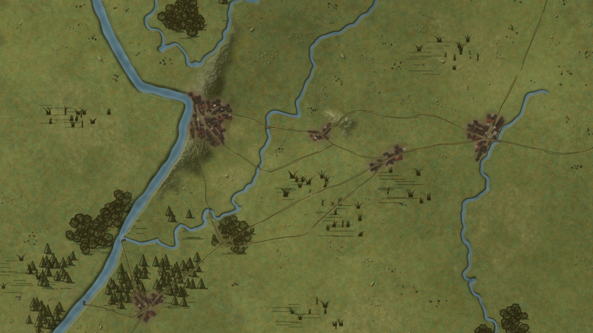

<!doctype html>
<html lang="en">
<head>
<meta charset="UTF-8" />
<meta name="viewport" content="width=device-width, initial-scale=1" />
<title>Weather Looks Test</title>
<!-- TEST PAGE (research/style_tests/more_life/weather). preview.html?w=rain&t=7 = one 1920x1080 stage at 1:1 (what render.js shoots);
     preview.html = the 2x3 grid of all six looks (iframes at half size). Base = vicksburg_w + the 2e living-map layers as rendered by
     grant/scenes/s12d_rt (camera cx 1560, cy 772, s 1.9), registered to the world box so the weather layers sit on the real map px. -->
<script src="vendor/gsap.min.js"></script>
<script src="weather.js"></script>
<script src="assets/vicksburg_w_data.js"></script>
<style>
  :root { --bg: #1b1a16; --ink: #e8e2cc; --muted: #a39d86; }
  @media (prefers-color-scheme: dark) { :root:not([data-theme="light"]) { --bg: #1b1a16; } }
  html, body { margin: 0; background: var(--bg); color: var(--ink); font: 15px/1.4 Georgia, serif; }
  #stage { position: relative; width: 1920px; height: 1080px; overflow: hidden; background: #55602f; }
  #scene { position: absolute; inset: 0; overflow: hidden; }
  #world { position: absolute; left: 0; top: 0; width: 2880px; height: 1620px; transform-origin: 0 0; }
  #world > img.base { position: absolute; max-width: none; }
  #overlay, #pins { position: absolute; left: 0; top: 0; width: 2880px; height: 1620px; pointer-events: none; }
  #fx, #units { position: absolute; inset: 0; pointer-events: none; }
  .unit { position: absolute; transform: translate(-50%, -50%); text-align: center; }
  .unit .ech { font: 700 15px/1 "Liberation Sans", Arial, sans-serif; letter-spacing: 1px; color: #141108; text-shadow: 0 0 2px rgba(232,226,200,.6); margin-bottom: 3px; }
  .unit svg { display: block; filter: drop-shadow(0 3px 4px rgba(0,0,0,.45)); }
  .lbl { position: absolute; max-width: none; }
  /* integration hook: W sets #scene[data-wx] while snow/fog is on the ground -> darker halo keeps the ivory town names readable */
  #scene[data-wx~="snow"] .lbl, #scene[data-wx~="fog"] .lbl { filter: drop-shadow(0 0 1.5px rgba(20,17,8,.95)) drop-shadow(0 1px 5px rgba(20,17,8,.75)); }
  .tag { position: absolute; left: 24px; bottom: 22px; font: 600 30px/1 Georgia, serif; color: #f3ecd2; background: rgba(20,18,12,.72); padding: 8px 14px; border-radius: 4px; letter-spacing: .04em; }
  /* grid mode */
  .grid { display: grid; grid-template-columns: repeat(2, 960px); gap: 14px; padding: 16px; width: max-content; }
  .grid figure { margin: 0; } .grid figcaption { color: var(--muted); padding: 6px 2px 0; }
  .grid iframe { width: 1920px; height: 1080px; border: 0; transform: scale(.5); transform-origin: 0 0; display: block; }
  .grid .frame { width: 960px; height: 540px; overflow: hidden; }
  h1 { font-size: 20px; margin: 16px 16px 0; font-weight: 600; }
  @media (max-width: 1000px) { .grid { grid-template-columns: 1fr; width: auto; padding: 16px; } .grid .frame { width: 100%; aspect-ratio: 16 / 9; height: auto; } }
</style>
</head>
<body>
<script>
const P = new URLSearchParams(location.search), MODE = P.get("w");
const LOOKS = { clear: "Clear (no weather)", rain: "Rain", mud: "Mud", snow: "Snow", fog: "Fog", rainmud: "Rain + mud" };
if (!MODE) {
  document.body.innerHTML = `<h1>Weather looks on Style W (Vicksburg wide basemap, camera s 1.9, t = 7 s)</h1><div class="grid">${Object.entries(LOOKS)
    .map(([k, n]) => `<figure><div class="frame"><iframe src="?w=${k}" loading="lazy" title="${n}"></iframe></div><figcaption>${n}</figcaption></figure>`).join("")}</div>`;
} else {
  const CAM = { x: -2004, y: -926.8, s: 1.9 };   // the s12d_rt world transform the base was shot at
  const toScr = (mx, my) => [CAM.x + mx * CAM.s, CAM.y + my * CAM.s];
  document.body.innerHTML = `<div id="stage"><div id="scene">
    <div id="world">
      
      <svg id="overlay" viewBox="0 0 2880 1620"></svg><div id="pins"></div>
    </div>
    <div id="units"></div>
    <div id="fx"></div>
  </div></div>`;
  // town labels exactly as the scene places them (constant on screen, anchored to the town point)
  const LB = { vicksburg: [[1388, 681], 201.5, 46.5, 47.968, -104.232], jackson: [[1885, 724], 185, 39.5, -30.991, -59.429] };
  const U = document.getElementById("units");
  Object.entries(LB).forEach(([k, [c, w, h, ax, ay]]) => { const [sx, sy] = toScr(...c);
    U.insertAdjacentHTML("beforeend", ``); });
  // two sample unit boxes (plain Style W boxes, infantry cross, echelon marks, no flags)
  const box = (x, y, fill, ech) => U.insertAdjacentHTML("beforeend", `<div class="unit" style="left:${x}px;top:${y}px"><div class="ech">${ech}</div>
    <svg width="52" height="34" viewBox="0 0 52 34"><rect x="1.5" y="1.5" width="49" height="31" fill="${fill}" stroke="#15130c" stroke-width="3"/>
    <path d="M3 3 L49 31 M49 3 L3 31" stroke="#fff" stroke-width="2.6"/></svg></div>`);
  box(1215, 640, "#2f5fb3", "XXX");
  box(905, 548, "#c8232c", "XX");
  document.getElementById("stage").insertAdjacentHTML("beforeend", `<div class="tag">${LOOKS[MODE] || MODE}</div>`);
  if (P.get("notag")) document.querySelector(".tag").remove();
  gsap.set("#world", { x: CAM.x, y: CAM.y, scale: CAM.s });

  // ---- the weather (this is the whole integration) ----
  const tl = gsap.timeline({ paused: true });
  tl.set({}, {}, 12);                        // a 12 s test timeline
  W.init({ tl, key: "vicksburg_w", assets: "assets/", end: 12 });
  if (MODE === "rain") W.rain({ t0: 0.5, intensity: 0.6 });
  if (MODE === "mud") W.mud({ t0: 0.5, intensity: 0.85 });
  if (MODE === "snow") W.snow({ t0: 0.5, intensity: 0.6 });
  if (MODE === "fog") W.fog({ t0: 0.5, intensity: 0.75 });
  if (MODE === "rainmud") { W.rain({ t0: 0.5, intensity: 0.55 }); W.mud({ t0: 0.5, intensity: 0.8 }); }
  W.clear(9.5);                             // everything fades out 9.5 -> 11.5 s
  window.__tl = tl;
  const T = +(P.get("t") || 7);
  const imgs = [...document.images].map((i) => i.decode().catch(() => {}));
  Promise.all(imgs).then(() => { tl.seek(T); W.render(); requestAnimationFrame(() => requestAnimationFrame(() => { document.body.dataset.ready = "1"; })); });
}
</script>
</body>
</html>
